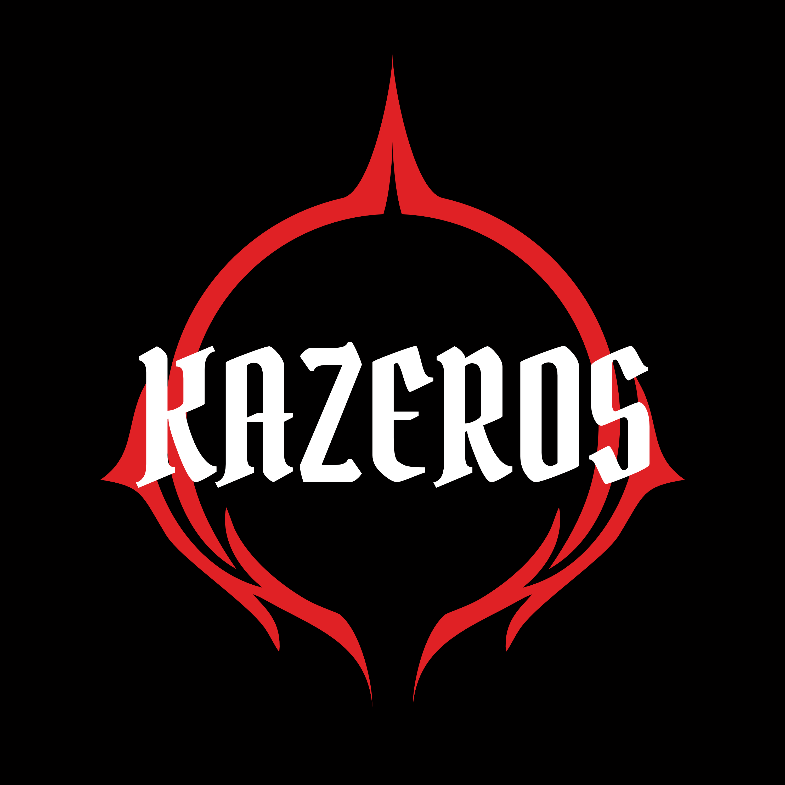
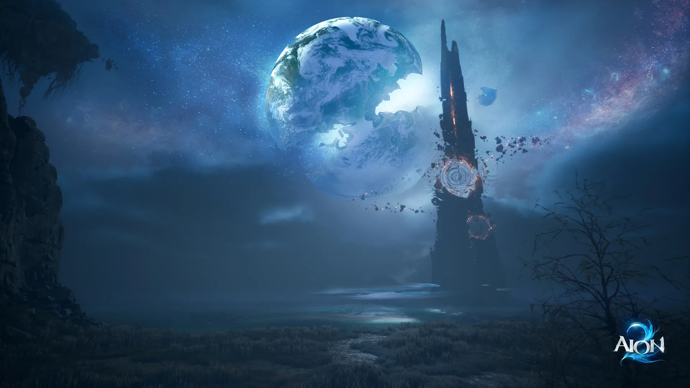

Маршруты фарма и твоя коллекция

Увеличивай карту кнопками + / −. На телефоне можно прокручивать карту в обе стороны.
Перетаскивай карту, масштабируй колёсиком или кнопками. Показаны все известные точки выбранного вида в регионе; это места появления, а не наличие живого моба сейчас.